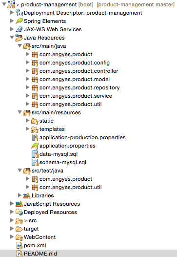

Product Management
With this project you will have a clean interface to manage your products using power libraries as:
- Spring Boot
- Spring Data JPA
- Spring Security
- Thymeleaf
- Dandelion
- Jsoup
- Mysql
- H2
- Maven
- Junit4
- Slf4j
- Bootstrap
-
Jquery
You can browse the javadoc for more information, including example usages.
Functional features:
- Super user to modify data on server side
- Operations allowed
- Create
- Update
- Delete
- Read
- Listing products with pagination, sort and filter on server side process
- Anonymous user can list all products
STS Dev Details

Main class
com.engyes.product.ProductManagementApplication defined as
@ComponentScan( "com.engyes.product" )
@Configuration
@EnableAutoConfiguration
public class ProductManagementApplication {
public static void main( String[] args ) {
SpringApplication.run( ProductManagementApplication.class, args );
}
}As you can see the project is clean, it uses the Spring Boot feature to autoconfigure the most of services used, others are customized in others classes.
Usage
Note, this project was created with Spring Tool suite (STS) and it doesn't mean you can't use others IDEs as (InteliJ, Eclipse....)
Running the project
Build
mvn package
then check target directory for update project archive product-management-x.x.x-SNAPSHOT.jar.
Dev profile
Working in development profile, you will have h2 database with 500 products on your database every time that you execute it.
Command
mvn spring-boot:run
Prod profile
First time in production, you will need to import the schema on your mysql database, for that, you only need to start the application with command below.
SPRING_PROFILES_ACTIVE=production mvn spring-boot:run -Dspring.datasource.initialize=true
or
java -jar -Dspring.profiles.active=production -Dspring.datasource.initialize=true product-management-x.x.x-SNAPSHOT.jar
For next time, you will have to use the command below to not modify the database
SPRING_PROFILES_ACTIVE=production mvn spring-boot:run
or
java -jar -Dspring.profiles.active=production product-management-x.x.x-SNAPSHOT.jar
Test
mvn test
It will run the full integrate test on project
History
- 1.0 Initial version